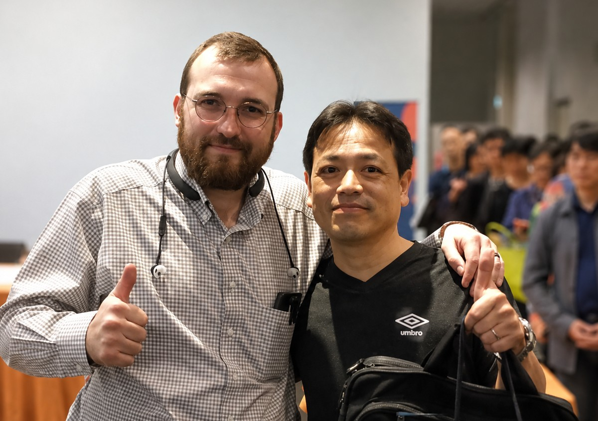

About
Cardanoとともに歩み、未来へつなぐ。
2019年からCardanoコミュニティで活動しています。 Stake Pool運営、情報発信、イベント、ガバナンスへの参加を通じて、 日本からCardanoの発展に貢献したいと考えています。

Profile
Shusuke Wakuda
AID1 Stake Pool Operator
Cardanoについて学び、分かったことを日本語で共有する活動から始まりました。 その後、翻訳、Stake Pool運営、Blockchain EXPOでの普及活動、 そしてCardanoガバナンスへの参加へと活動を広げてきました。